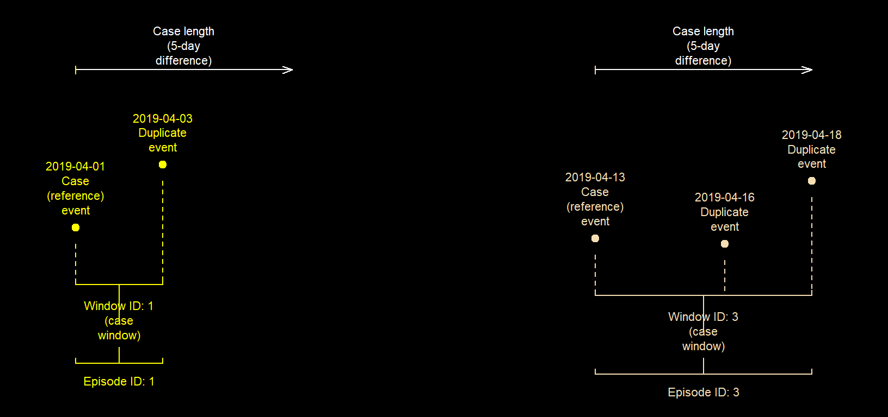
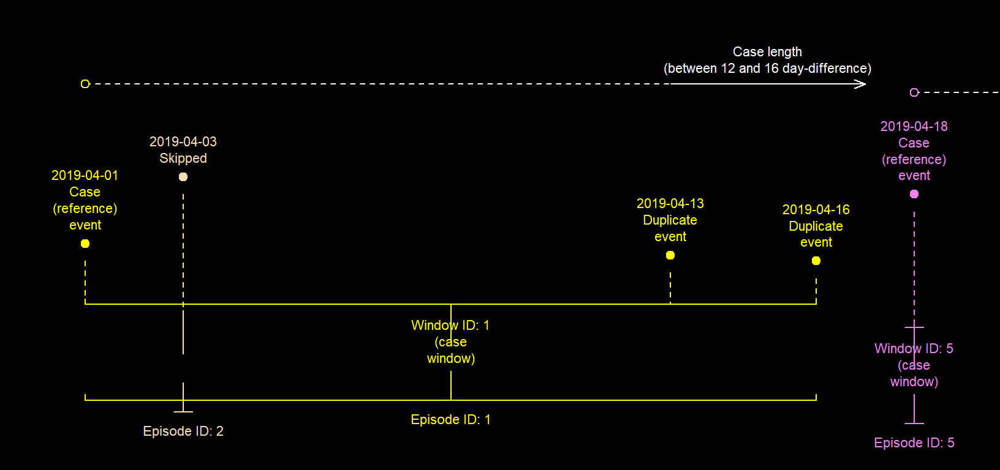
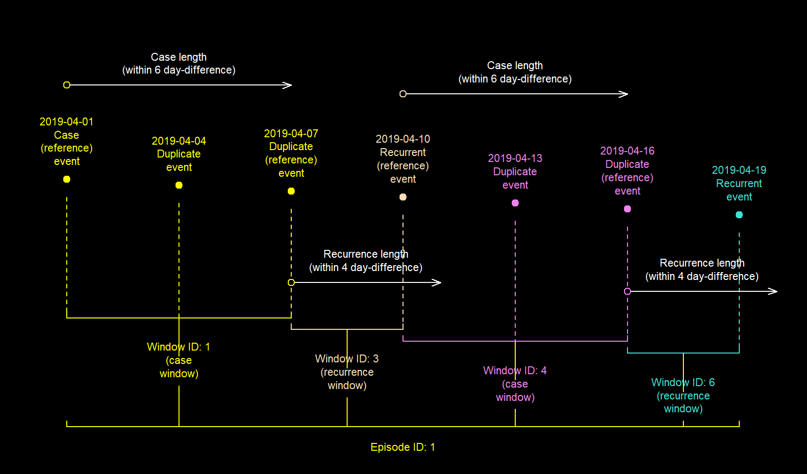
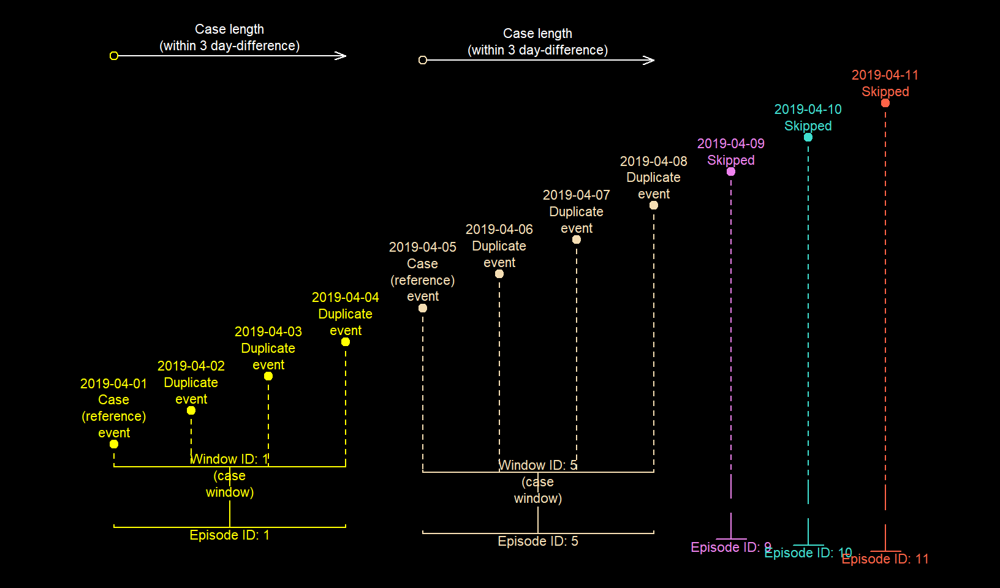
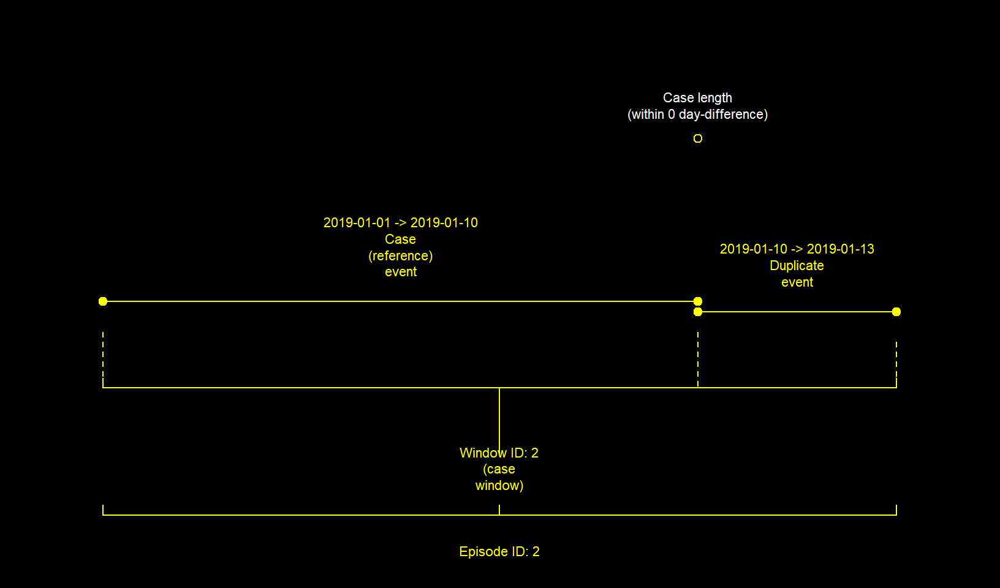
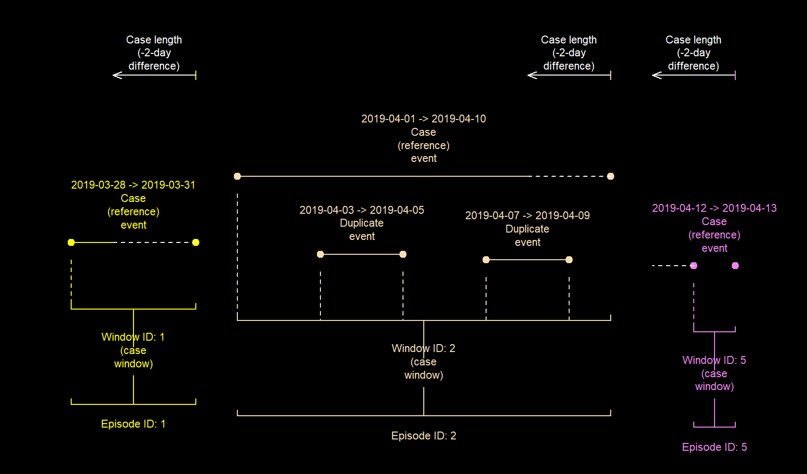

Implementing case definitions for epidemiological analysis in R
16 April 2020
episode_group.RmdIntroduction
Deduplicating events is an important step in establishing a case definition in epidemiological analyses. For the most part, this involves selecting a reference event which represents an episode. Subsequent events within a specified period are then taken as duplicates of this reference event.
fixed_episodes(), rolling_episodes() and episode_group() provide simple but flexible ways of grouping records from multiple datasets into episodes. This then allows for easy deduplication or a sub-analysis within each episode.
Uses
You can use record_group and these episode grouping functions to implement a variety of case definitions. For example, they can group episodes;
- from events that occur at points in time e.g. medical diagnoses or traffic incidents
- from events that occur within periods of time e.g. hospital stay. See interval grouping
- with periods of recurrence (
recurrence_length) - with specific events as their reference event (case). See “user defined case assignment”
- with different durations (
case_length) or recurrence periods (recurrence_length) per subset (strata) of a dataset. See stratified grouping
Implementation
Overview
An episode as produced by fixed_episodes(), rolling_episodes() or episode_group() is a set of dated records (events or periods of events) within a specific period. Each episode begins with a reference event (case) and may contain duplicate and recurrent events. Duplicate event are those that occur between cases and recurrent events.
These functions produce two main type of episodes - "fixed" episodes which do not include periods of recurrence and "rolling" episodes which do. These are produced by fixed_episodes() and rolling_episodes() respectively which are wrapper functions of episode_group().
Episodes, windows, case lengths and recurrence periods
Before we begin, let’s go over some terms which will pop up now and again. An event is simply a dated record (single time point). Anevent period is a record with start and end time points. The “lengths” - case_length and recurrence_length are specific durations after an event. More specifically, the case_length is a specified period after the reference event (first event of an episode) while recurrence_length is a specified duration after the other events subsequent to the reference event.
All events within the same case_length or recurrence_length form a window. A window equates to an episode. events outside a window belong to separate episodes. What differentiates "rolling episodes" from "fixed episodes" is that when two or more windows overlap, they are collapsed into a larger window, indicating that the episode is still on-going. As a result, every event belonging to both windows are considered part of the same "roliing episode". Consequently, a "fixed episode" is never longer than its case_length but a "rolling episode" becomes longer than its case_length if the first window (also referred to case window) overlaps with another.
The examples below demonstrate this difference with 4 events/records.
library(diyar)
# Events
ds <- c("01/04/2019", "03/04/2019", "13/04/2019","16/04/2019")
ds <- data.frame(date= as.Date(ds, "%d/%m/%Y"))
ds$date
#> [1] "2019-04-01" "2019-04-03" "2019-04-13" "2019-04-16"Figure 1a: Illustration of key terms - fixed episodes
# 6-day (5-day difference) episodes - fixed episodes
ds$f1 <- fixed_episodes(ds$date, case_length = 5, display = F)
#> Episode grouping complete - 0 record(s) assinged a unique ID.
ds$f1
#> [1] "E.1 (C) C.1" "E.1 (D) C.1" "E.3 (C) C.3" "E.3 (D) C.3"Figure 1b: Illustration of key terms - rolling episodes
# 6-day (5-day difference) episodes with 11-days recurrence periods - rolling episodes
ds$r1 <- rolling_episodes(ds$date, case_length = 5, recurrence_length = 10, display = F)
#> Episode grouping complete - 0 record(s) assinged a unique ID.
ds$r1
#> [1] "E.1 (C) C.1" "E.1 (D) C.1" "E.1 (R) R.2" "E.1 (R) R.3"
Let’s go through another example …
dates <- diyar::infections_2$date
dates # dates
#> [1] "2019-04-01" "2019-04-06" "2019-04-11" "2019-04-16" "2019-04-21"
#> [6] "2019-06-04"Figure 2a: 15-day “fixed” episodes
# Fixed episodes
f <- fixed_episodes(date = dates, case_length=14, group_stats = T, to_s4 =T, display =F)
#> Episode grouping complete - 1 record(s) assinged a unique ID.
f # fixed episode identifiers
#> [1] "E.1 2019-04-01 -> 2019-04-11 (C) C.1"
#> [2] "E.1 2019-04-01 -> 2019-04-11 (D) C.1"
#> [3] "E.1 2019-04-01 -> 2019-04-11 (D) C.1"
#> [4] "E.4 2019-04-16 -> 2019-04-21 (C) C.4"
#> [5] "E.4 2019-04-16 -> 2019-04-21 (D) C.4"
#> [6] "E.6 2019-06-04 == 2019-06-04 (C) C.6"
In the fixed episodes example, records 1 to 3 are assigned to a window (i.e. window ID 1). In this window, record 1 is the reference event (case) and records 2 and 3 are the duplicates, because they are within 15 days (14-day difference) of record 1. This window then becomes one episode (episode ID 1; Figure 2a). Record 4 then starts a new window (and episode i.e. window and episode ID 4). Record 5 is within 15 days of record 4 and so is assigned to the same window and episode (window and episode ID 4). This process continues chronologically until all records have been assigned to an episode.
Figure 2b: 15-day “rolling” episodes with a 15-day recurrence period
# Rolling episodes
r <- rolling_episodes(date = dates, case_length=14, group_stats = T, display = F, to_s4 =T)
#> Episode grouping complete - 1 record(s) assinged a unique ID.
r # rolling episode identifiers
#> [1] "E.1 2019-04-01 -> 2019-04-21 (C) C.1"
#> [2] "E.1 2019-04-01 -> 2019-04-21 (D) C.1"
#> [3] "E.1 2019-04-01 -> 2019-04-21 (D) C.1"
#> [4] "E.1 2019-04-01 -> 2019-04-21 (R) R.3"
#> [5] "E.1 2019-04-01 -> 2019-04-21 (D) R.3"
#> [6] "E.6 2019-06-04 == 2019-06-04 (C) C.6"
In the rolling episodes example, records 1 to 3 are also assigned to one window (window ID 1) however, unlike the fixed episode example, since records 4 and 5 both fall within 15 days (14-day difference) of the last event in the previous window (record 3; Figure 2b), they are both folded into window ID 1 to give a longer episode ID 1. Since record 4 is the earliest of the two, it’s flagged as the recurrent event while record 5 is taken as a duplicate.
If your case definition does not explicitly require a rolling episode, use fixed_episode(). It takes less time.
For rolling episodes, it may be useful to imagine the windows as mini-episodes that may eventually be collapsed into one main episode. As mentioned, these mini-episodes will only be collapsed if they overlap. Each window is either a case window or recurrence window and will have one event flagged as the case or recurrent event respectively.
case events are always reference events for case windows and the episode as a whole. Conversely, by default, recurrent events are not reference events for recurrence windows. Strictly speaking, the reference event for a recurrence window is the last event of the previous window and this is where the recurrence_length starts from. In the example above, that is record 3.
Making a case definition
Almost every argument in fixed_episodes(), rolling_episodes() and episode_group() can affect which events are taken as the case and recurrent event, and this ultimately allows you to implement a variety of case definitions to your datasets. This section covers the main parts of this process.
Reference events
From diyar v0.1.0, you can use the recurrence_from_last argument to specify that the reference event for a recurrence window should be the first event from the previous window and not the last (default). This means that after flagging a recurrent event, the recurrence window is re-calculated from it. This new option is only really useful if your case_length and recurrence_length are different. If they are the same (which is the default behaviour), you’ll have essentially created a fixed episode. See a demonstration of this below.
df <- c("01/04/2019", "11/04/2019", "16/04/2019","21/04/2019", "07/05/2019")
df <- data.frame(date= as.Date(df, "%d/%m/%Y"))
# 15-day fixed episodes
df$f1 <- fixed_episodes(df$date, case_length = 14, display = F)
#> Episode grouping complete - 1 record(s) assinged a unique ID.
# 15-day rolling episods with 15-day recurrence periods
# Since the first event is the reference event for the next recurrence window and,
# the recurrence_length is the same the case_length (14-day difference),
# the result will be the same as the 15-day fixed-episode example above
df$r1 <- rolling_episodes(df$date, case_length = 14, recurrence_from_last = F,
to_s4 = T, display = F)
#> Episode grouping complete - 1 record(s) assinged a unique ID.
df
#> date f1 r1
#> 1 2019-04-01 E.1 (C) C.1 E.1 (C) C.1
#> 2 2019-04-11 E.1 (D) C.1 E.1 (D) C.1
#> 3 2019-04-16 E.3 (C) C.3 E.3 (C) C.3
#> 4 2019-04-21 E.3 (D) C.3 E.3 (D) C.3
#> 5 2019-05-07 E.5 (C) C.5 E.5 (C) C.5Figure 3a: Last event in a window taken as the reference event for the next recurrence window (default)
df$r2 <- rolling_episodes(df$date, case_length = 14, recurrence_length = 16, display = F)
#> Episode grouping complete - 0 record(s) assinged a unique ID.
df$r2
#> [1] "E.1 (C) C.1" "E.1 (D) C.1" "E.1 (R) R.2" "E.1 (D) R.2" "E.1 (R) R.4"
Figure 3b: First event in a window taken as the reference event for the next recurrence window
df$r3 <- rolling_episodes(df$date, case_length = 14, recurrence_length = 16,
recurrence_from_last = F, display = F)
#> Episode grouping complete - 0 record(s) assinged a unique ID.
df$r3
#> [1] "E.1 (C) C.1" "E.1 (D) C.1" "E.1 (R) R.1" "E.1 (R) R.3" "E.1 (R) R.4"Case window for both case and recurrent events
From diyar v0.1.0, you can use the case_for_recurrence argument to specify that both case and recurrence events should have a case window. The default behaviour is that only case events have a case window. See a demonstration of this below.
Example 1
df <- c("01/04/2019", "11/04/2019", "16/04/2019","21/04/2019","25/04/2019", "07/05/2019")
df <- data.frame(date= as.Date(df, "%d/%m/%Y"))Figure 4a: Case windows for case events only (default)
df$r4 <- rolling_episodes(df$date, case_length = 10, display = F)
#> Episode grouping complete - 1 record(s) assinged a unique ID.
df$r4
#> [1] "E.1 (C) C.1" "E.1 (D) C.1" "E.1 (R) R.2" "E.1 (D) R.2" "E.1 (R) R.4"
#> [6] "E.6 (C) C.6"Figure 4b: Case windows for case and recurrence events
df$r5 <- rolling_episodes(df$date, case_length = 10, case_for_recurrence = T,
to_s4 = T, display = F)
#> Episode grouping complete - 1 record(s) assinged a unique ID.
df$r5
#> [1] "E.1 (C) C.1" "E.1 (D) C.1" "E.1 (R) R.2" "E.1 (D) R.2" "E.1 (D) C.4"
#> [6] "E.6 (C) C.6"Example 2.
date <- seq.Date(as.Date("01/04/2019", "%d/%m/%Y"),
as.Date("21/04/2019","%d/%m/%Y"),
by="3 day")
# Example 2
df2 <- data.frame(date = date, sn = 1:length(date))
# dates
df2$date
#> [1] "2019-04-01" "2019-04-04" "2019-04-07" "2019-04-10" "2019-04-13"
#> [6] "2019-04-16" "2019-04-19"Figure 5a: Case windows for case events only (default)
df2$r1 <- rolling_episodes(df2$date, case_length = 6, recurrence_length = 4, display = F, sn=df2$sn)
#> Episode grouping complete - 0 record(s) assinged a unique ID.
df2$r1
#> [1] "E.1 (C) C.1" "E.1 (D) C.1" "E.1 (D) C.1" "E.1 (R) R.3" "E.1 (R) R.4"
#> [6] "E.1 (R) R.5" "E.1 (R) R.6"
Figure 5b: Case windows for case and recurrence events
df2$r2 <- rolling_episodes(df2$date, case_length = 6, recurrence_length = 4,
case_for_recurrence = T, display = F, sn=df2$sn)
#> Episode grouping complete - 0 record(s) assinged a unique ID.
df2$r1
#> [1] "E.1 (C) C.1" "E.1 (D) C.1" "E.1 (D) C.1" "E.1 (R) R.3" "E.1 (R) R.4"
#> [6] "E.1 (R) R.5" "E.1 (R) R.6"Notice that in the examples above, all events have been assigned to the same episode but the number of recurrent events differ.
Number of recurrence periods and episodes
You can choose how many times to check for episodes using episode_max. When each strata of the dataset has the maximum number of episodes specified (episode_max), subsequent events are given unique episode IDs, making them unique cases.
data("infections_3");
dbs <- infections_3[c("pid","date")];
# dates
dbs$date
#> [1] "2019-04-01" "2019-04-02" "2019-04-03" "2019-04-04" "2019-04-05"
#> [6] "2019-04-06" "2019-04-07" "2019-04-08" "2019-04-09" "2019-04-10"
#> [11] "2019-04-11"Figure 6a: Maximum of one fixed episode grouping per strata
dbs$eps_1 <- fixed_episodes(strata = dbs$pid, date = dbs$date, case_length = 3, display = F, episodes_max = 1)
#> Episode grouping complete - 7 record(s) assinged a unique ID.
dbs$eps_1
#> [1] "E.01 (C) C.01" "E.01 (D) C.01" "E.01 (D) C.01" "E.01 (D) C.01"
#> [5] "E.05 (S) S.05" "E.06 (S) S.06" "E.07 (S) S.07" "E.08 (S) S.08"
#> [9] "E.09 (S) S.09" "E.10 (S) S.10" "E.11 (S) S.11"
Figure 6b: Maximum of two fixed episode grouping per strata
dbs$eps_2 <- fixed_episodes(strata = dbs$pid, date = dbs$date, case_length = 3, display = FALSE, episodes_max = 2)
#> Episode grouping complete - 3 record(s) assinged a unique ID.
dbs$eps_2
#> [1] "E.01 (C) C.01" "E.01 (D) C.01" "E.01 (D) C.01" "E.01 (D) C.01"
#> [5] "E.05 (C) C.05" "E.05 (D) C.05" "E.05 (D) C.05" "E.05 (D) C.05"
#> [9] "E.09 (S) S.09" "E.10 (S) S.10" "E.11 (S) S.11"Similarly, you can choose how many periods of recurrence your case definition should permit i.e. how many times to check for recurrent events. You do this with rolls_max. The default is Inf i.e. check until there are no more events within the recurrence period of the reference event. See below.
Figure 6c: Infinite recurrence periods per episode per strata (default)
dbs$eps_4 <- rolling_episodes(strata = dbs$pid, date =dbs$date, case_length = 2,display = F)
#> Episode grouping complete - 0 record(s) assinged a unique ID.
dbs$eps_4
#> [1] "E.1 (C) C.1" "E.1 (D) C.1" "E.1 (D) C.1" "E.1 (R) R.3" "E.1 (D) R.3"
#> [6] "E.1 (R) R.5" "E.1 (D) R.5" "E.1 (R) R.7" "E.1 (D) R.7" "E.1 (R) R.9"
#> [11] "E.1 (D) R.9"Figure 6d: Maximum of one recurrence periods per episode per strata
dbs$eps_6 <- rolling_episodes(strata = dbs$pid, date =dbs$date, case_length = 2,display = F,
rolls_max = 1)
#> Episode grouping complete - 0 record(s) assinged a unique ID.
dbs$eps_6
#> [1] "E.1 (C) C.1" "E.1 (D) C.1" "E.1 (D) C.1" "E.1 (R) R.3" "E.1 (D) R.3"
#> [6] "E.6 (C) C.6" "E.6 (D) C.6" "E.6 (D) C.6" "E.9 (C) C.9" "E.9 (D) C.9"
#> [11] "E.9 (D) C.9"
Note that if case_for_recurrence is TRUE, after checking for recurrence in the last recurrence period, the function will also check for duplicates within the case window of the last recurrent event. See below.
Figure 6e: Maximum of one recurrence periods per episode per strata with case_for_recurrence as TRUE
dbs$eps_7 <- rolling_episodes(strata = dbs$pid, date =dbs$date, case_length = 2,display = F,
rolls_max = 1, case_for_recurrence = T)
#> Episode grouping complete - 0 record(s) assinged a unique ID.
dbs$eps_7
#> [1] "E.1 (C) C.1" "E.1 (D) C.1" "E.1 (D) C.1" "E.1 (R) R.3"
#> [5] "E.1 (D) R.3" "E.1 (D) C.5" "E.1 (D) C.5" "E.8 (C) C.8"
#> [9] "E.8 (D) C.8" "E.8 (D) C.8" "E.8 (R) R.10"
Chronological order of events
By default, episode grouping begins at the earliest event and proceeds to the most recent one, making the earliest event the case. The opposite of this behaviour is to begin episode grouping at the most recent event (making that the case) and then proceed backwards in time. These behaviours are determined by from_last.
dbs <- infections_2[c("date")];
# dates
dbs$date
#> [1] "2019-04-01" "2019-04-06" "2019-04-11" "2019-04-16" "2019-04-21"
#> [6] "2019-06-04"Figure 7a: Episode grouping in chronological order
dbs$forward <- fixed_episodes(date=dbs$date, case_length= 14,
group_stats = T, display = F, to_s4=T)
#> Episode grouping complete - 1 record(s) assinged a unique ID.
dbs$forward
#> [1] "E.1 2019-04-01 -> 2019-04-11 (C) C.1"
#> [2] "E.1 2019-04-01 -> 2019-04-11 (D) C.1"
#> [3] "E.1 2019-04-01 -> 2019-04-11 (D) C.1"
#> [4] "E.4 2019-04-16 -> 2019-04-21 (C) C.4"
#> [5] "E.4 2019-04-16 -> 2019-04-21 (D) C.4"
#> [6] "E.6 2019-06-04 == 2019-06-04 (C) C.6"
Figure 7b: Episode grouping in reverse chronological order
dbs$backward <- fixed_episodes(date=dbs$date, case_length= 14,
group_stats = T, display = F, to_s4=T, from_last=T)
#> Episode grouping complete - 1 record(s) assinged a unique ID.
dbs$backward
#> [1] "E.2 2019-04-06 <- 2019-04-01 (D) C.2"
#> [2] "E.2 2019-04-06 <- 2019-04-01 (C) C.2"
#> [3] "E.5 2019-04-21 <- 2019-04-11 (D) C.5"
#> [4] "E.5 2019-04-21 <- 2019-04-11 (D) C.5"
#> [5] "E.5 2019-04-21 <- 2019-04-11 (C) C.5"
#> [6] "E.6 2019-06-04 == 2019-06-04 (C) C.6"
User defined case assignment
Aside from the chronological order of events, you can use specific events as reference events. This preference is supplied to custom_sort. In fixed_episodes() and rolling_episodes(), custom_sort should be a vector whose values when sorted in ascending order specifies the desired preference. For example, events with a custom_sort value of 1 will be preferentially taken as the start of an episode over those with a value of 2. This is prioritised over the chronological order of those records. See the example below.
dates <- c("01/04/2019", "05/04/2019", "07/04/2019")
dates <- as.Date(dates,"%d/%m/%Y")
user_sort <- c(2,1,2)
# dates
dates
#> [1] "2019-04-01" "2019-04-05" "2019-04-07"
# preference determined by from_last
fixed_episodes(date=dates, case_length=6, display=F, group_stats = T)
#> Episode grouping complete - 0 record(s) assinged a unique ID.
#> [1] "E.1 2019-04-01 -> 2019-04-07 (C) C.1"
#> [2] "E.1 2019-04-01 -> 2019-04-07 (D) C.1"
#> [3] "E.1 2019-04-01 -> 2019-04-07 (D) C.1"
# user defined preference via custom sort is prioritised before from_last
fixed_episodes(date=dates, case_length=6, custom_sort = user_sort, display=F, group_stats = T)
#> Episode grouping complete - 1 record(s) assinged a unique ID.
#> [1] "E.1 2019-04-01 == 2019-04-01 (C) C.1"
#> [2] "E.2 2019-04-05 -> 2019-04-07 (C) C.2"
#> [3] "E.2 2019-04-05 -> 2019-04-07 (D) C.2"
# user defined preference via custom sort is prioritised before from_last.
# duplicates are flagged from both directions
fixed_episodes(date=dates, case_length=6, custom_sort = user_sort, display=F,
bi_direction = T, group_stats = T)
#> Episode grouping complete - 0 record(s) assinged a unique ID.
#> [1] "E.2 2019-04-01 -> 2019-04-07 (D) C.2"
#> [2] "E.2 2019-04-01 -> 2019-04-07 (C) C.2"
#> [3] "E.2 2019-04-01 -> 2019-04-07 (D) C.2"In the second example, even though the second record occurred after the first, episode grouping began at the second one. This was because the custom_sort value (user_sort) for the second record was lower than that of the first.
A consequence of using custom_sort this way is that record 1 is not grouped together with record 2 even though it’s within the case_length of record 2. This is because duplicates are tracked in one direction determined by from_last. To track duplicates from both directions use bi_direction as shown in the third example.
Note that examples 1 and 3 results in the same number of duplicates (and episodes) but different cases - records 1 and 2 respectively.
custom_sort will follow R standard sort behaviour. For example, a factor will sort on its levels not the descriptive label.
For a practical example, see a case definition where E. coli urinary tract infections (UTI) are considered precursors to E. coli bloodstream infections (BSI). This means that episodes need to be created in such a way that; if there are UTI and BSI records within the same case_length, the UTI record will be taken as the case.
dbs <- diyar::infections_2[c("date","infx")]
dbs$infx <- gsub("E. coli ","",dbs$infx)
dbs$infx[c(2,5)] <- "UTI"
dbs
#> # A tibble: 6 x 2
#> date infx
#> <date> <chr>
#> 1 2019-04-01 BSI
#> 2 2019-04-06 UTI
#> 3 2019-04-11 BSI
#> 4 2019-04-16 BSI
#> 5 2019-04-21 UTI
#> 6 2019-06-04 BSI
dbs$epids_1 <- fixed_episodes(date=dbs$date, case_length=14,
custom_sort = dbs$infx, display = F)
#> Episode grouping complete - 1 record(s) assinged a unique ID.
dbs$infx_f <- factor(dbs$infx, levels = c("UTI","BSI"))
dbs$epids_2 <- fixed_episodes(date=dbs$date, case_length=14,
custom_sort = dbs$infx_f, display = F)
#> Episode grouping complete - 3 record(s) assinged a unique ID.
dbs$epids_3 <- fixed_episodes(date=dbs$date, case_length=14,
custom_sort = dbs$infx_f, display = F, bi_direction = TRUE)
#> Episode grouping complete - 2 record(s) assinged a unique ID.
dbs
#> # A tibble: 6 x 6
#> date infx epids_1 infx_f epids_2 epids_3
#> <date> <chr> <epid> <fct> <epid> <epid>
#> 1 2019-04-01 BSI E.1 (C) C.1 BSI E.1 (C) C.1 E.2 (D) C.2
#> 2 2019-04-06 UTI E.1 (D) C.1 UTI E.2 (C) C.2 E.2 (C) C.2
#> 3 2019-04-11 BSI E.1 (D) C.1 BSI E.2 (D) C.2 E.2 (D) C.2
#> 4 2019-04-16 BSI E.4 (C) C.4 BSI E.2 (D) C.2 E.2 (D) C.2
#> 5 2019-04-21 UTI E.4 (D) C.4 UTI E.5 (C) C.5 E.5 (C) C.5
#> 6 2019-06-04 BSI E.6 (C) C.6 BSI E.6 (C) C.6 E.6 (C) C.6In epids_2, after changing the sort preference using factor levels (infx_f), record 1 (E. coli BSI) and record 2 (E. coli UTI) are no longer part of the same episode. This is because record 2, is now the reference event where episode grouping began, and since record 1 occurred before record 2, they are not grouped together. epids_3 is episode grouping when bi_direction is used.
In episode_group(), you can implement custom_sort in levels. You’ll need to create a column for each level. The column names are then supplied to custom_sort in the required order (level)
Stratified episode grouping
Episode grouping can be done separately for different subsets (strata) of a dataset. Examples of a strata could be patient IDs, pathogen, source of infection or any combination of these. Episodes will be limited to each strata. episodes from different strata can have a different case_lengths and/or recurrence_lengths.
record_group() is useful for creating a group identifier which can then be used as a strata. See record group for further details.
As an example, using the infections dataset, a case definition may specify the following;
- UTI and BSI records are considered different
episodesregardless of when they occur - UTI has a
case_lengthof 8 days andrecurrence periodof 31 days - BSI has a
case_lengthof 15 days and norecurrence period
In the example below, adding infection to the strata argument means that "UTI" and "BSI" records will not be in the same episode. Furthermore, the case_length and recurrence_length for each will be different as specified in the epi and recur columns respectively
data(infections)
dbs <- infections[c("date","infection")]
dbs <- dbs[dbs$infection%in% c("UTI","BSI"),]
dbs$epi <- ifelse(dbs$infection=="UTI", 7, 14)
dbs$recur <- ifelse(dbs$infection=="UTI", 30, 0)
dbs$epids <- rolling_episodes(date=dbs$date, case_length =dbs$epi, to_s4 =TRUE,
recurrence_length = dbs$recur, display = FALSE, group_stats = TRUE)
#> Episode grouping complete - 1 record(s) assinged a unique ID.
dbs
#> # A tibble: 9 x 5
#> date infection epi recur epids
#> <date> <chr> <dbl> <dbl> <epid>
#> 1 2018-04-01 BSI 14 0 E.1 2018-04-01 -> 2018-05-13 (C) C.1
#> 2 2018-04-07 UTI 7 30 E.1 2018-04-01 -> 2018-05-13 (D) C.1
#> 3 2018-04-13 UTI 7 30 E.1 2018-04-01 -> 2018-05-13 (D) C.1
#> 4 2018-04-19 UTI 7 30 E.1 2018-04-01 -> 2018-05-13 (R) R.3
#> 5 2018-04-25 BSI 14 0 E.1 2018-04-01 -> 2018-05-13 (D) R.3
#> 6 2018-05-01 UTI 7 30 E.1 2018-04-01 -> 2018-05-13 (D) R.3
#> 7 2018-05-07 BSI 14 0 E.1 2018-04-01 -> 2018-05-13 (D) R.3
#> 8 2018-05-13 BSI 14 0 E.1 2018-04-01 -> 2018-05-13 (D) R.3
#> 9 2018-05-31 BSI 14 0 E.9 2018-05-31 == 2018-05-31 (C) C.9Sub-strata
A sub-strata is created when records within a strata have different case_lengths or recurrence_lengths. The case definition below demonstrates how you can take advantage of this.
- UTI and BSI records are different episodes regardless of when they occur.
- UTIs have a
case_lengthof 8 days and recurrence period of 31 days - BSIs have a
case_lengthof 15 days if not treated OR acase_lengthof 5 days if treated. In both situations there is no recurrence period. - Respiratory tract infections (RTI) have a
case_lengthof 29 days and recurrence period of 6 days
In this example, whether or not the infection is treated should be viewed as the sub-strata, and the source of infection as the strata.
data("infections_4");
dbs <- infections_4
dbs$epids <- episode_group(dbs, sn=rid, strata=c(pid, organism, source), date=date,
case_length =epi, episode_type = "rolling", recurrence_length = recur,
display = FALSE)
#> Episode grouping complete - 3 record(s) assinged a unique ID.
dbs
#> # A tibble: 11 x 9
#> rid date pid organism source treated epi recur epids
#> <int> <date> <dbl> <chr> <chr> <chr> <dbl> <dbl> <epid>
#> 1 1 2019-04-01 1 E. coli UTI - 7 30 E.01 (C) C.01
#> 2 2 2019-04-06 1 E. coli UTI - 7 30 E.01 (D) C.01
#> 3 3 2019-04-11 1 E. coli BSI Y 4 0 E.03 (C) C.03
#> 4 4 2019-04-16 1 E. coli BSI N 14 0 E.04 (C) C.04
#> 5 5 2019-04-21 1 E. coli BSI Y 4 0 E.04 (D) C.04
#> 6 6 2019-04-26 1 E. coli RTI Y 28 5 E.06 (C) C.06
#> 7 7 2019-05-01 1 E. coli RTI N 28 5 E.06 (D) C.06
#> 8 8 2019-05-06 1 E. coli BSI Y 4 0 E.08 (C) C.08
#> 9 9 2019-05-11 1 E. coli BSI N 14 0 E.09 (C) C.09
#> 10 10 2019-05-16 1 E. coli UTI N 7 30 E.10 (C) C.10
#> 11 11 2019-05-21 1 E. coli UTI N 7 30 E.10 (D) C.10There are a few things to note with stratified grouping;
- Unless required,
case_lengthandrecurrence_lengthshould be consistent across eachstrataotherwise, you’ll inadvertently create a sub-strata - Episode grouping with and without a sub-strata are different and could lead to different results
- Using a sub-strata is not the same as adding that sub-strata to the
strataargument. In the example above, addingtreatedtostratawill group treated infections separately from untreated infections. While this could be the desired outcome depending on your case definition, the case definition above did not required treated and untreated infections to be grouped separately, only that the treated infections last longer.
Stratified grouping is the same as doing a separate analysis for each subset (strata) of the dataset.
Interval grouping
Here we discuss the process of grouping periods of events into episodes. Each event period is essentially a record with a start_point() and end_point() in time. For the purpose of episode grouping, these event periods are created as number_line() objects and supplied to the date argument. Overlapping event periods are then grouped into episodes.
Below is a simple examples;
dates <- as.Date(c("01/04/2019", "05/04/2019"), "%d/%M/%Y")
dates
#> [1] "2019-04-01" "2019-04-05"
# A 10-day period from each date
periods <- number_line(dates, dates + 10)
periods
#> [1] "2019-04-01 -> 2019-04-11" "2019-04-05 -> 2019-04-15"
# Grouping events
fixed_episodes(date=dates, case_length=30, display=FALSE, group_stat=TRUE)
#> Episode grouping complete - 0 record(s) assinged a unique ID.
#> [1] "E.1 2019-04-01 -> 2019-04-05 (C) C.1"
#> [2] "E.1 2019-04-01 -> 2019-04-05 (D) C.1"
# Grouping periods
fixed_episodes(date=periods, case_length=30, display=FALSE, group_stat=TRUE)
#> Episode grouping complete - 0 record(s) assinged a unique ID.
#> [1] "E.1 2019-04-01 -> 2019-04-15 (C) C.1"
#> [2] "E.1 2019-04-01 -> 2019-04-15 (D) C.1"For a practical example, below are periods of hospital stay which have been grouped into episodes. This is different from grouping the actual admission or discharge events.
hos_admin <- diyar::hospital_admissions
hos_admin$admin_period <- number_line(hos_admin$admin_dt, hos_admin$discharge_dt)
# Admissions events
hos_admin$admin_dt
#> [1] "2019-01-01" "2019-01-01" "2019-01-10" "2019-01-05" "2019-01-05"
#> [6] "2019-01-07" "2019-01-04" "2019-01-20" "2019-01-26" "2019-01-01"
#> [11] "2019-01-20"
# Hospital stay
hos_admin$admin_period
#> [1] "2019-01-01 == 2019-01-01" "2019-01-01 -> 2019-01-10"
#> [3] "2019-01-10 -> 2019-01-13" "2019-01-05 -> 2019-01-06"
#> [5] "2019-01-05 -> 2019-01-15" "2019-01-07 -> 2019-01-15"
#> [7] "2019-01-04 -> 2019-01-13" "2019-01-20 -> 2019-01-30"
#> [9] "2019-01-26 -> 2019-01-31" "2019-01-01 -> 2019-01-10"
#> [11] "2019-01-20 -> 2019-01-30"Figure 8a: Grouping the actual admissions into episodes
hs_epids_a <- fixed_episodes(date=hos_admin$admin_dt, sn=hos_admin$rd_id, case_length=0,
display=F, group_stats=T)
#> Episode grouping complete - 4 record(s) assinged a unique ID.Figure 8b: Grouping the periods of stay (admission -> discharge)
hs_epids_b <- fixed_episodes(date=hos_admin$admin_period, sn=hos_admin$rd_id, case_length = 0,
display=F, group_stats=T)
#> Episode grouping complete - 0 record(s) assinged a unique ID.
There are 6 ways event periods can overlap (overlap_methods). These are "exact", "across", "inbetween", "chain", "aligns_start" and "aligns_end". See overlaps. Only event periods that overlap by the specified method will be grouped into the same episode. You can use any combination of the 6 methods but the default option is to use all 6. See below for a demonstration of this.
# wrapper function to use with lapply
epi_grp_func <- function(x){
epids <- fixed_episodes(date=hos_admin$admin_period,
sn=hos_admin$rd_id,
case_length = 0,
overlap_methods = x,
display = FALSE,
to_s4 = TRUE,
group_stats = TRUE)
# for the prurpose of this demonstration, limit to overlapped periods
epids[epids@epid_total>1]
}
# Methods
methods <- list(
# Identical intervals
exact = "exact",
# Overlapping intervals
across= "across",
# Intervals with aligned start points
aligns_start = "aligns_start",
# Intervals with aligned end points
aligns_end = "aligns_end",
# Chained intervals
chain = "chain",
# Intervals occurring completely within others
inbetween = "inbetween",
# Chained intervals and those occurring completely within others
cb1 = "chain|inbetween",
# Chained intervals, identical intervals and those occurring completely within others
cb2 = "exact|chain|inbetween",
# Chained intervals, overlapping intervals and those with aligned end point
cb3 = "across|chain|aligns_end"
)
epids <- lapply(methods, epi_grp_func)
#> Episode grouping complete - 7 record(s) assinged a unique ID.
#> Episode grouping complete - 5 record(s) assinged a unique ID.
#> Episode grouping complete - 7 record(s) assinged a unique ID.
#> Episode grouping complete - 7 record(s) assinged a unique ID.
#> Episode grouping complete - 9 record(s) assinged a unique ID.
#> Episode grouping complete - 7 record(s) assinged a unique ID.
#> Episode grouping complete - 8 record(s) assinged a unique ID.
#> Episode grouping complete - 5 record(s) assinged a unique ID.
#> Episode grouping complete - 4 record(s) assinged a unique ID.
names(epids) <- names(methods)
# Results
epids["chain"]
#> $chain
#> [1] "E.2 2019-01-01 -> 2019-01-13 (C) C.2"
#> [2] "E.2 2019-01-01 -> 2019-01-13 (D) C.2"
epids["cb2"]
#> $cb2
#> [1] "E.2 2019-01-01 -> 2019-01-13 (C) C.2"
#> [2] "E.2 2019-01-01 -> 2019-01-13 (D) C.2"
#> [3] "E.2 2019-01-01 -> 2019-01-13 (D) C.2"
#> [4] "E.8 2019-01-20 -> 2019-01-30 (C) C.8"
#> [5] "E.2 2019-01-01 -> 2019-01-13 (D) C.2"
#> [6] "E.8 2019-01-20 -> 2019-01-30 (D) C.8"Figure 9a: Grouped episodes when considering only “exact” overlap method
Figure 9b: Grouped episodes when considering only “chain” overlap method Figure 9c: Grouped episodes when considering “chain” or “inbetween” overlap method
Case length and recurrence length in interval grouping
From diyar v0.1.0, you can use negative case_lengths and recurrence_lengths.
- Using positive “lengths” will collapse two periods into one, if the second one is within* the first one or
n-days+ after the end of the first one. - Using negative “lengths” will collapse two periods into one, if the second one is within* the start and
n-days+ before the end of the first one. - Using negative “lengths” that’s larger than the duration of the period will collapse the two periods into one, if the second one is within*
(n + 1 + number_line_width())-days+ before the start of the first one.- note that this will happen even if
from_lastis TRUE
- note that this will happen even if
- within or any other method of
overlap
+ days or any other episode_unit
Examples below
pa <- c("28/03/2019", "01/04/2019", "03/04/2019", "07/04/2019","12/04/2019")
pz <- c("31/03/2019", "10/04/2019", "05/04/2019", "09/04/2019","13/04/2019")
pa <- as.Date(pa, "%d/%m/%Y")
pz <- as.Date(pz, "%d/%m/%Y")
periods <- number_line(pa, pz)
periods
#> [1] "2019-03-28 -> 2019-03-31" "2019-04-01 -> 2019-04-10"
#> [3] "2019-04-03 -> 2019-04-05" "2019-04-07 -> 2019-04-09"
#> [5] "2019-04-12 -> 2019-04-13"Figure 9d: Fixed episodes with a case_length of 6
eps_a <- fixed_episodes(periods, case_length =6, group_stats = T, display = F)
#> Episode grouping complete - 0 record(s) assinged a unique ID.
eps_a
#> [1] "E.1 2019-03-28 -> 2019-04-10 (C) C.1"
#> [2] "E.1 2019-03-28 -> 2019-04-10 (D) C.1"
#> [3] "E.1 2019-03-28 -> 2019-04-10 (D) C.1"
#> [4] "E.4 2019-04-07 -> 2019-04-13 (C) C.4"
#> [5] "E.4 2019-04-07 -> 2019-04-13 (D) C.4"
Use positive “lengths” when you need to capture periods within a specified duration after the end of a reference period.
Figure 9e: Fixed episodes with a case_length of -2
eps_b <- fixed_episodes(periods, case_length =-2, group_stats = T, display = F)
#> Episode grouping complete - 2 record(s) assinged a unique ID.
eps_b
#> [1] "E.1 2019-03-28 -> 2019-03-31 (C) C.1"
#> [2] "E.2 2019-04-01 -> 2019-04-10 (C) C.2"
#> [3] "E.2 2019-04-01 -> 2019-04-10 (D) C.2"
#> [4] "E.2 2019-04-01 -> 2019-04-10 (D) C.2"
#> [5] "E.5 2019-04-12 -> 2019-04-13 (C) C.5"
Figure 9f: Fixed episodes with a case_length of -6
eps_c <- fixed_episodes(periods, case_length =-6, group_stats = T, display = F)
#> Episode grouping complete - 3 record(s) assinged a unique ID.
eps_c
#> [1] "E.1 2019-03-28 -> 2019-03-31 (C) C.1"
#> [2] "E.2 2019-04-01 -> 2019-04-10 (C) C.2"
#> [3] "E.2 2019-04-01 -> 2019-04-10 (D) C.2"
#> [4] "E.4 2019-04-07 -> 2019-04-09 (C) C.4"
#> [5] "E.5 2019-04-12 -> 2019-04-13 (C) C.5"
Use negative “lengths” when you only want to capture periods that at least ended n-days+ before the end of the reference period.
It is possible to use a negative “length” that’s so large, the reference period will capture periods that occur before itself. Consider this a record level implementation of bi_direction. Just like bi_direction, this is only relevant when you use a custom_sort. See below.
Figure 9g: Fixed episodes with a case_length of -12
custom_sort <- c(2,0,2,1,2)
eps_d <- fixed_episodes(periods, case_length =-12, custom_sort = custom_sort, group_stats = T, display = F)
#> Episode grouping complete - 1 record(s) assinged a unique ID.
eps_d
#> [1] "E.2 2019-03-28 -> 2019-04-10 (D) C.2"
#> [2] "E.2 2019-03-28 -> 2019-04-10 (C) C.2"
#> [3] "E.4 2019-04-03 -> 2019-04-09 (D) C.4"
#> [4] "E.4 2019-04-03 -> 2019-04-09 (C) C.4"
#> [5] "E.5 2019-04-12 -> 2019-04-13 (C) C.5"
Useful ways of using these functions
Episode grouping across other units of time
In the examples above, episode grouping was done by days (episode_unit). However, it can be done by other units of time e.g. hours, days or weeks. Acceptable options are “seconds”, “minutes”, “hours”, “days”, “weeks”, “months” or “years”. Below is an example of episode grouping by the hour.
data("hourly_data"); dbs <- hourly_data
dbs$datetime
#> [1] "2019-04-01 00:00:00 UTC" "2019-04-01 02:00:00 UTC"
#> [3] "2019-04-01 04:00:00 UTC" "2019-04-01 06:00:00 UTC"
#> [5] "2019-04-01 08:00:00 UTC" "2019-04-01 10:00:00 UTC"
#> [7] "2019-04-01 12:00:00 UTC" "2019-04-01 14:00:00 UTC"
#> [9] "2019-04-01 16:00:00 UTC" "2019-04-01 18:00:00 UTC"
#> [11] "2019-04-01 20:00:00 UTC" "2019-04-01 22:00:00 UTC"
#> [13] "2019-04-02 00:00:00 UTC"
# Each unit is relative to a set number of seconds.
diyar::episode_unit
#> $seconds
#> [1] 1
#>
#> $minutes
#> [1] 60
#>
#> $hours
#> [1] 3600
#>
#> $days
#> [1] 86400
#>
#> $weeks
#> [1] 604800
#>
#> $months
#> [1] 2628000
#>
#> $years
#> [1] 31536000
# 5-hr episodes
rolling_episodes(date = dbs$datetime, case_length = 5,
episode_unit = "hours", recurrence_length = 9, group_stats = TRUE, display = FALSE)
#> Episode grouping complete - 0 record(s) assinged a unique ID.
#> [1] "E.1 2019-04-01 -> 2019-04-02 (C) C.1"
#> [2] "E.1 2019-04-01 -> 2019-04-02 (D) C.1"
#> [3] "E.1 2019-04-01 -> 2019-04-02 (D) C.1"
#> [4] "E.1 2019-04-01 -> 2019-04-02 (R) R.1"
#> [5] "E.1 2019-04-01 -> 2019-04-02 (D) R.1"
#> [6] "E.1 2019-04-01 -> 2019-04-02 (D) R.5"
#> [7] "E.1 2019-04-01 -> 2019-04-02 (D) R.5"
#> [8] "E.1 2019-04-01 -> 2019-04-02 (D) R.5"
#> [9] "E.1 2019-04-01 -> 2019-04-02 (D) R.5"
#> [10] "E.1 2019-04-01 -> 2019-04-02 (R) R.9"
#> [11] "E.1 2019-04-01 -> 2019-04-02 (D) R.9"
#> [12] "E.1 2019-04-01 -> 2019-04-02 (D) R.9"
#> [13] "E.1 2019-04-01 -> 2019-04-02 (D) R.9"
# 5-day episodes
rolling_episodes(date = dbs$datetime, case_length = 5,
episode_unit = "days", recurrence_length = 9, group_stats = TRUE, display = FALSE)
#> Episode grouping complete - 0 record(s) assinged a unique ID.
#> [1] "E.1 2019-04-01 -> 2019-04-02 (C) C.1"
#> [2] "E.1 2019-04-01 -> 2019-04-02 (D) C.1"
#> [3] "E.1 2019-04-01 -> 2019-04-02 (D) C.1"
#> [4] "E.1 2019-04-01 -> 2019-04-02 (D) C.1"
#> [5] "E.1 2019-04-01 -> 2019-04-02 (D) C.1"
#> [6] "E.1 2019-04-01 -> 2019-04-02 (D) C.1"
#> [7] "E.1 2019-04-01 -> 2019-04-02 (D) C.1"
#> [8] "E.1 2019-04-01 -> 2019-04-02 (D) C.1"
#> [9] "E.1 2019-04-01 -> 2019-04-02 (D) C.1"
#> [10] "E.1 2019-04-01 -> 2019-04-02 (D) C.1"
#> [11] "E.1 2019-04-01 -> 2019-04-02 (D) C.1"
#> [12] "E.1 2019-04-01 -> 2019-04-02 (D) C.1"
#> [13] "E.1 2019-04-01 -> 2019-04-02 (D) C.1"Limit episode grouping to a subset of the dataframe
For example, with the hourly_data dataset, you can decide to exclude "GP1" and "GP2" records from episode grouping. Excluded records are skipped and assigned unique episode IDs.
dbs <- head(hourly_data[c("datetime","category")], 10)
dbs$subset <- ifelse(dbs$category!="GP3", NA, "group")
dbs$epids <- rolling_episodes(strata= dbs$subset, date = dbs$datetime, case_length = 5, episode_unit = "hours",
recurrence_length = 9, display = TRUE, group_stats = TRUE)
#> Episode or recurrence window 1.
#> 2 of 2 record(s) grouped into episodes. 0 records not yet grouped.
#>
#> Episode grouping complete - 8 record(s) assinged a unique ID.
dbs
#> datetime category subset
#> 1 2019-04-01 00:00:00 GP1 <NA>
#> 2 2019-04-01 02:00:00 GP2 <NA>
#> 3 2019-04-01 04:00:00 GP1 <NA>
#> 4 2019-04-01 06:00:00 GP2 <NA>
#> 5 2019-04-01 08:00:00 GP1 <NA>
#> 6 2019-04-01 10:00:00 GP2 <NA>
#> 7 2019-04-01 12:00:00 GP1 <NA>
#> 8 2019-04-01 14:00:00 GP2 <NA>
#> 9 2019-04-01 16:00:00 GP3 group
#> 10 2019-04-01 18:00:00 GP3 group
#> epids
#> 1 E.1 2019-04-01 00:00:00 == 2019-04-01 00:00:00 (S) S.1
#> 2 E.2 2019-04-01 02:00:00 == 2019-04-01 02:00:00 (S) S.2
#> 3 E.3 2019-04-01 04:00:00 == 2019-04-01 04:00:00 (S) S.3
#> 4 E.4 2019-04-01 06:00:00 == 2019-04-01 06:00:00 (S) S.4
#> 5 E.5 2019-04-01 08:00:00 == 2019-04-01 08:00:00 (S) S.5
#> 6 E.6 2019-04-01 10:00:00 == 2019-04-01 10:00:00 (S) S.6
#> 7 E.7 2019-04-01 12:00:00 == 2019-04-01 12:00:00 (S) S.7
#> 8 E.8 2019-04-01 14:00:00 == 2019-04-01 14:00:00 (S) S.8
#> 9 E.9 2019-04-01 16:00:00 -> 2019-04-01 18:00:00 (C) C.9
#> 10 E.9 2019-04-01 16:00:00 -> 2019-04-01 18:00:00 (D) C.9
Use a strata from record_group()
You can used pid objects from record_group() as a strata.
data(infections)
dbs <- infections[c("date","infection")]; dbs
#> # A tibble: 11 x 2
#> date infection
#> <date> <chr>
#> 1 2018-04-01 BSI
#> 2 2018-04-07 UTI
#> 3 2018-04-13 UTI
#> 4 2018-04-19 UTI
#> 5 2018-04-25 BSI
#> 6 2018-05-01 UTI
#> 7 2018-05-07 BSI
#> 8 2018-05-13 BSI
#> 9 2018-05-19 RTI
#> 10 2018-05-25 RTI
#> 11 2018-05-31 BSI
# familiar unique record ids for reference - optional
dbs$rd_id <- c(640,17,58,21,130,79,45,300,40,13,31)
# strata based on matching sources of infection
dbs$pids <- record_group(dbs, sn = rd_id, criteria = infection, display = FALSE)
#> Record grouping complete - 0 record(s) assigned a group unique ID.
# stratified grouping
dbs$epids <- fixed_episodes(sn = dbs$rd_id, date = dbs$date, strata = dbs$pids,
to_s4 = TRUE, display = FALSE, case_length = 10)
#> Episode grouping complete - 5 record(s) assinged a unique ID.
dbs
#> # A tibble: 11 x 5
#> date infection rd_id pids epids
#> <date> <chr> <dbl> <pid> <epid>
#> 1 2018-04-01 BSI 640 P.31 (CRI 01) E.640 (C) C.640
#> 2 2018-04-07 UTI 17 P.17 (CRI 01) E.017 (C) C.017
#> 3 2018-04-13 UTI 58 P.17 (CRI 01) E.017 (D) C.017
#> 4 2018-04-19 UTI 21 P.17 (CRI 01) E.021 (C) C.021
#> 5 2018-04-25 BSI 130 P.31 (CRI 01) E.130 (C) C.130
#> 6 2018-05-01 UTI 79 P.17 (CRI 01) E.079 (C) C.079
#> 7 2018-05-07 BSI 45 P.31 (CRI 01) E.045 (C) C.045
#> 8 2018-05-13 BSI 300 P.31 (CRI 01) E.045 (D) C.045
#> 9 2018-05-19 RTI 40 P.13 (CRI 01) E.040 (C) C.040
#> 10 2018-05-25 RTI 13 P.13 (CRI 01) E.040 (D) C.040
#> 11 2018-05-31 BSI 31 P.31 (CRI 01) E.031 (C) C.031
Use numeric values for the date argument
date and datetime objects are fundamentally numeric values within the context of a reference point (as.Date(..., origin)). The episode grouping process ignores this context and instead uses each value as a reference point for others. Therefore, it will allow you use numeric values instead of date or datetime values for the date argument. For example, if you use 0-2, it does not matter what they represent i.e. number of days from a particular date or number of seconds from a particular time. It only matters that 0 is before 1, which in turn is before 2. When the functions are used this way, the episode_unit argument is ignored.
vals <- c(8.1,6,12,8.5,12,3,8,15,5,7)
vals
#> [1] 8.1 6.0 12.0 8.5 12.0 3.0 8.0 15.0 5.0 7.0
fixed_episodes(vals, case_length = .5, group_stats = T, display = F)
#> Episode grouping complete - 5 record(s) assinged a unique ID.
#> [1] "E.07 8 -> 8.5 (D) C.07" "E.02 6 == 6 (C) C.02"
#> [3] "E.03 12 == 12 (C) C.03" "E.07 8 -> 8.5 (D) C.07"
#> [5] "E.03 12 == 12 (D) C.03" "E.06 3 == 3 (C) C.06"
#> [7] "E.07 8 -> 8.5 (C) C.07" "E.08 15 == 15 (C) C.08"
#> [9] "E.09 5 == 5 (C) C.09" "E.10 7 == 7 (C) C.10"
fixed_episodes(vals, case_length = 5, group_stats = T, display = F)
#> Episode grouping complete - 1 record(s) assinged a unique ID.
#> [1] "E.1 8.1 -> 12 (C) C.1" "E.6 3 -> 8 (D) C.6"
#> [3] "E.1 8.1 -> 12 (D) C.1" "E.1 8.1 -> 12 (D) C.1"
#> [5] "E.1 8.1 -> 12 (D) C.1" "E.6 3 -> 8 (C) C.6"
#> [7] "E.6 3 -> 8 (D) C.6" "E.8 15 == 15 (C) C.8"
#> [9] "E.6 3 -> 8 (D) C.6" "E.6 3 -> 8 (D) C.6"
fixed_episodes(vals, case_length = 100, group_stats = T, display = F)
#> Episode grouping complete - 0 record(s) assinged a unique ID.
#> [1] "E.6 3 -> 15 (D) C.6" "E.6 3 -> 15 (D) C.6" "E.6 3 -> 15 (D) C.6"
#> [4] "E.6 3 -> 15 (D) C.6" "E.6 3 -> 15 (D) C.6" "E.6 3 -> 15 (C) C.6"
#> [7] "E.6 3 -> 15 (D) C.6" "E.6 3 -> 15 (D) C.6" "E.6 3 -> 15 (D) C.6"
#> [10] "E.6 3 -> 15 (D) C.6"Conclusion
There are a variety of ways to use these function. Before beginning, It’s worth reviewing your case definition and its implication on the dataset. In general, the following steps will guide you on how to use them;
- Work out the
stratain your dataset - Choose whether you need
"fixed"or"rolling"episodes - Choose whether you are grouping individual events or periods of events by supplying a
date,datetimeornumber_lineobject as required. See interval grouping - Choose the required
case_length, and/orrecurrence_length. The values should be unique to eachstrataunless you require a sub-strata - Change
from_lasttoTRUEif you want to start episode grouping at the most recent record thereby making it the"case". Note that this is not the same as starting episode grouping at the earliest record (from_lastisFALSE) and then picking the most recent record in that episode as the"case". See chronological order of events - If you require the
"case"to be the earliest or most recent event of a particular type of event, usecustom_sortin combination withfrom_last. If not, ignore this argument. See user defined case assignment - If you require episodes to include records on either side of the
"case"usebi_direction. If not, ignore this argument - Determine if you are measuring episodes by the minute, hour or day e.t.c., and set
episode_unitaccordingly. Be sure to supply adatetimeto thedateargument ifepisode_unitis less than “days”